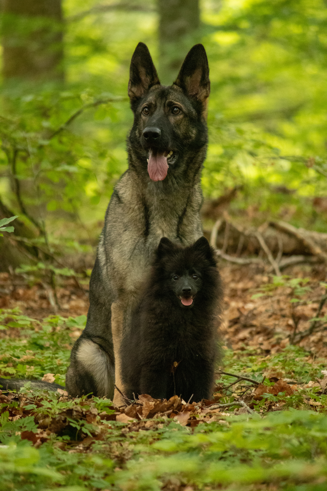
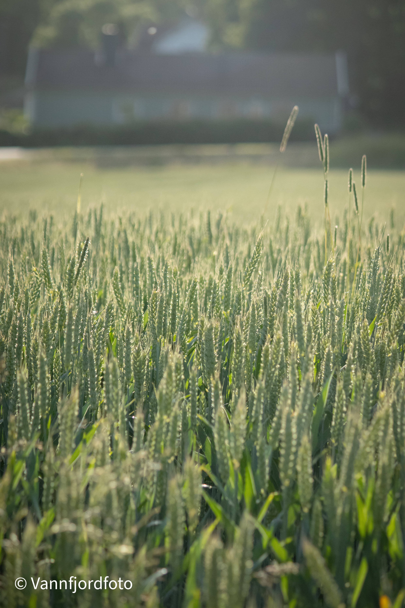
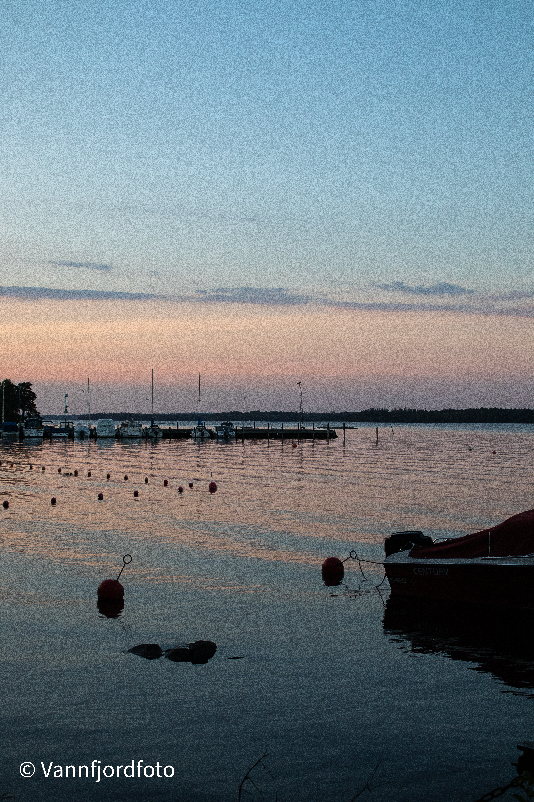
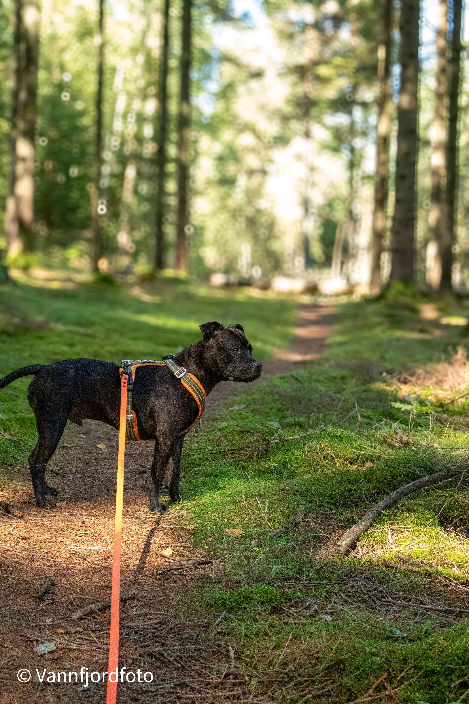

Uthyrare & returmottagare – Persson Hyrmaskiner AB
2020–2026
Digital Marketing Specialist student på IHM Bussines School i Göteborg
Jag studerar till Digital Marketing Specialist på IHM Business School och har sedan innan flera års arbetserfarenhet av kundkontakt, försäljning och administration.
Jag är en social, nyfiken och ansvarstagande person som tycker om att utvecklas och lära mig nya saker. Just nu studerar jag till Digital Marketing Specialist på IHM Business School, där jag får fördjupa mig inom bland annat digital strategi, content, SEO, paid media, AI och digital analys. Min bakgrund är inom kundservice, försäljning och administration. Under flera år arbetade jag med kundkontakt, rådgivning, offerter, inköp och administrativa uppgifter. Där lärde jag mig framför allt vikten av att förstå kundens behov, vara lösningsorienterad och kunna hålla struktur även när tempot är högt. Jag ser min tidigare erfarenhet som en viktig grund i min nya riktning inom digital marknadsföring. För mig handlar bra marknadsföring inte bara om att synas, utan om att förstå målgruppen och skapa kommunikation som känns relevant. Som person är jag noggrann, självständig och lösningsorienterad, samtidigt som jag trivs bra med att samarbeta med andra. Jag har lätt för att sätta mig in i nya system och tycker om att hela tiden utvecklas.
2020–2026
2018–2020
Jag är van att lyssna på kunden, förstå behov och hitta rätt lösning.
Jag trivs med att hålla ordning och prioritera när flera saker händer samtidigt.
Jag är van vid självständigt arbete och att ta ansvar för mina uppgifter.
Jag tycker om att lära mig nya saker, system och arbetssätt.
Jag försöker se möjligheter och hitta lösningar när problem uppstår.
Min erfarenhet av kundkontakt har gett mig en stark grund i att kommunicera med olika människor.
På fritiden tycker jag om att träna med min hund och umgås med vänner och familj. Jag uppskattar också att vara ute och röra på mig. Min kamera är alltid med på mina äventyr.





Vill du veta mer? Mejla mig eller hör av dig på LinkedIn.